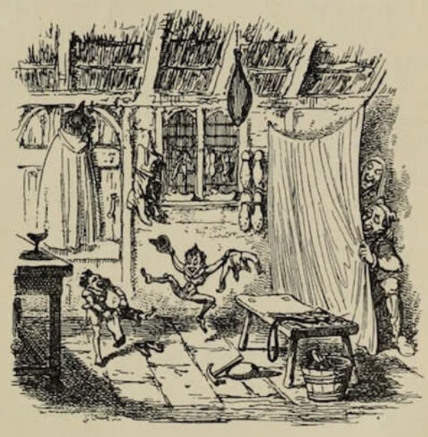

The Elves and the Shoemaker is one of our Favorite Fairy Tales and Christmas Stories

A shoemaker, by no fault of his own, had become so poor that at last he had nothing left but leather for one pair of shoes. So in the evening, he cut out the shoes which he wished to begin to make the next morning, and as he had a good conscience, he lay down quietly in his bed, commended himself to God, and fell asleep. In the morning, after he had said his prayers, and was just going to sit down to work, the two shoes stood quite finished on his table. He was astounded, and knew not what to say to it. He took the shoes in his hands to observe them closer, and they were so neatly made that there was not one bad stitch in them, just as if they were intended as a masterpiece.
Soon after, a buyer came in, and as the shoes pleased him so well, he paid more for them than was customary, and, with the money, the shoemaker was able to purchase leather for two pairs of shoes. He cut them out at night, and next morning was about to set to work with fresh courage; but he had no need to do so, for, when he got up, they were already made, and buyers also were not wanting, who gave him money enough to buy leather for four pairs of shoes.
The following morning, too, he found the four pairs made; and so it went on constantly, what he cut out in the evening was finished by the morning, so that he soon had his honest independence again, and at last became a wealthy man.
Now it befell that one evening not long before Christmas, when the man had been cutting out, he said to his wife, before going to bed, WHAT THINK YOU IF WE WERE TO STAY UP TO-NIGHT TO SEE WHO IT IS THAT LENDS US THIS HELPING HAND? The woman liked the idea, and lighted a candle, and then they hid themselves in a corner of the room, behind some clothes which were hanging up there, and watched. When it was midnight, two pretty little naked men came, sat down by the shoemaker's table, took all the work which was cut out before them and began to stitch, and sew, and hammer so skilfully and so quickly with their little fingers that the shoemaker could not turn away his eyes for astonishment. They did not stop until all was done, and stood finished on the table, and they ran quickly away.
Next morning the woman said, THE LITTLE MEN HAVE MADE US RICH, AND WE REALLY MUST SHOW THAT WE ARE GRATEFUL FOR IT. THEY RUN ABOUT SO, AND HAVE NOTHING ON, AND MUST BE COLD. I'LL TELL THEE WHAT I'LL DO: I WILL MAKE THEM LITTLE SHIRTS, AND COATS, AND VESTS, AND TROUSERS, AND KNIT BOTH OF THEM A PAIR OF STOCKINGS, AND DO THOU, TOO, MAKE THEM TWO LITTLE PAIRS OF SHOES.
The man said, I SHALL BE VERY GLAD TO DO IT; and one night, when everything was ready, they laid their presents all together on the table instead of the cut-out work, and then concealed themselves to see how the little men would behave.
At midnight they came bounding in, and wanted to get to work at once, but as they did not find any leather cut out, but only the pretty little articles of clothing, they were at first astonished, and then they showed intense delight. They dressed themselves with the greatest rapidity, putting the pretty clothes on, and singing,
"Now we are boys so fine to see,
Why should we longer cobblers be?"
Then they danced and skipped and leapt over chairs and benches. At last they danced out of doors. From that time forth they came no more, but as long as the shoemaker lived all went well with him, and all his undertakings prospered.
© 2025 SDEV1701 - The Elves and the Shoemaker Exercise
Original Story Here